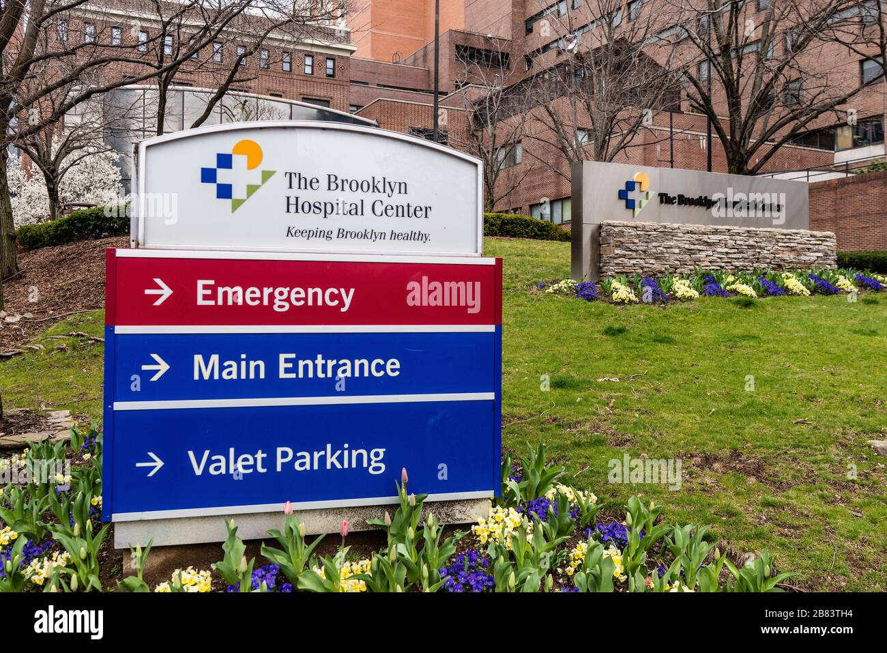
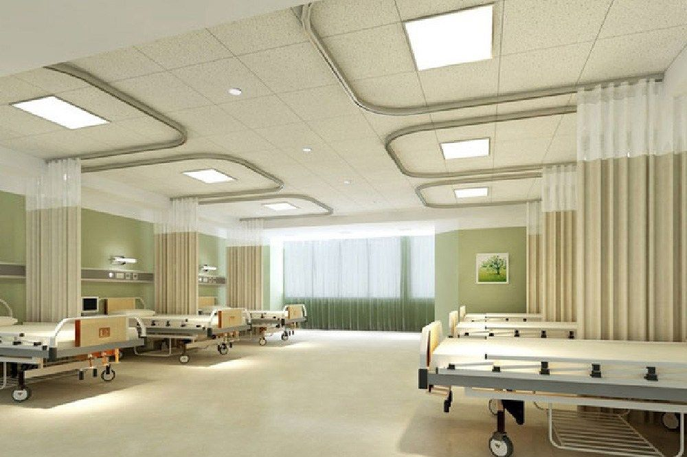
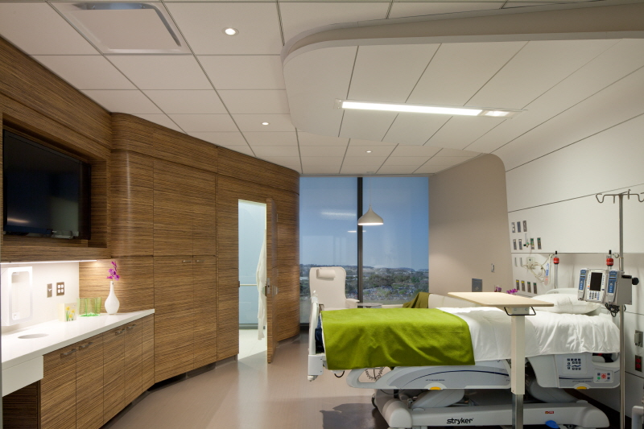

Emergency Room

Our state-of-the-art emergency room is equipped to handle urgent medical situations 24/7. Expect a team of highly trained professionals ready to provide immediate care.
Patient Rooms
Each patient room is designed for comfort and privacy, featuring modern amenities and a calming environment to aid recovery.
Surgical Suite
Our surgical suite is equipped with the latest technology, ensuring that our surgeons can perform procedures safely and effectively.
Diagnostic Imaging
We offer advanced diagnostic imaging services, including MRI, CT scans, and X-rays, all conducted by experienced radiologists.
Rehabilitation Center
Our rehabilitation center provides physical therapy and support to help patients regain strength and mobility after surgery or injury.
Rehabilitation Center
Our rehabilitation center provides physical therapy and support to help patients regain strength and mobility after surgery or injury.